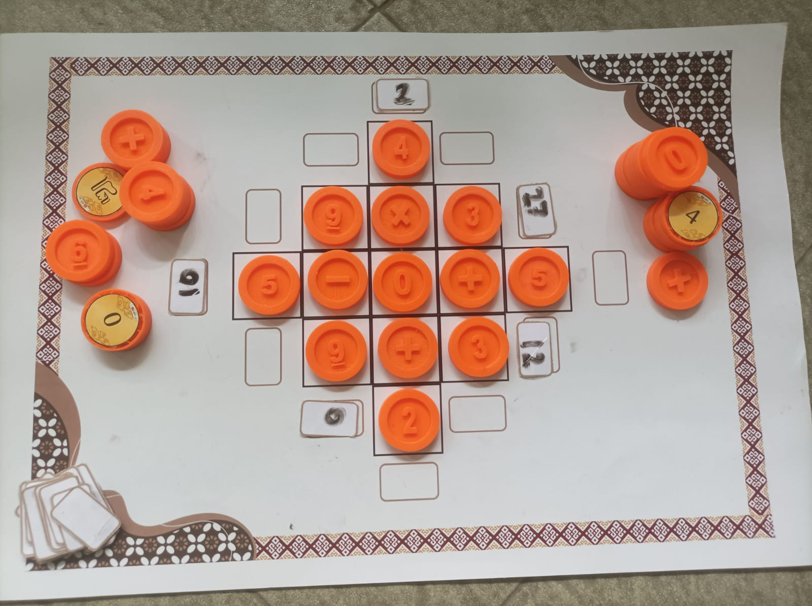
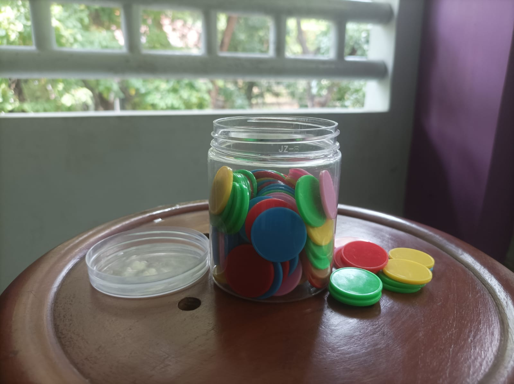
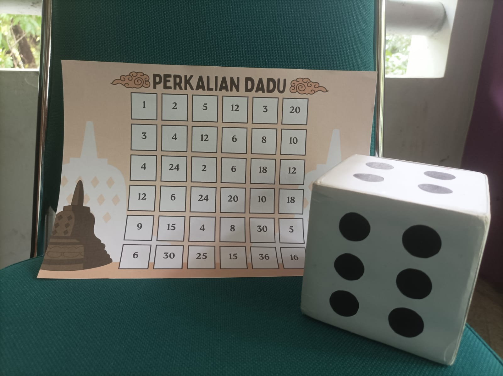
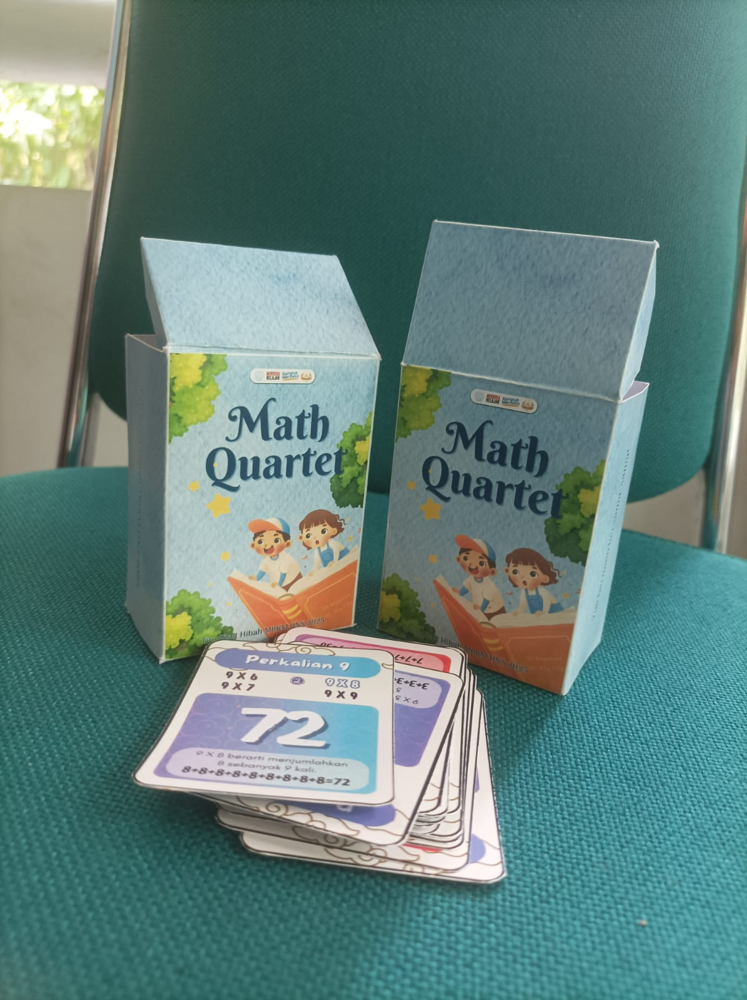

Deskripsi Umum
Workshop 3D Print adalah salah satu kegiatan pada bagian Implementation kami sekaligus menjadi salah satu luaran utama dari kelompok Hibah MBKM kami. Workshop ini dilakukan bersama dengan Tim Inovasi Dinas Pendidikan Kota Surakarta dengan Ibu Kucisti Ike Retnaningtyas sebagai ketua Tim Inovasi menjadi narasumber utama pada acara ini. Kegiatan workshop ini dilakukan pada tanggal 14 - 16 Mei 2025 bertempat di Kantor Dinas Pendidikan Kota Surakarta dan Aula SMPN 3 Surakarta. Kegiatan dibagi menjadi 3 hari dengan masing-masing hari memiliki acara yang berbeda.
Hari Pertama
Hari pertama dilaksanakan pada hari Rabu, 14 Mei 2025 dan bertempat di Kantor Dinas Pendidikan Kota Surakarta. Hari pertama ini dihadiri oleh Kepala SMP se-Surakarta, guru, hingga perwakilan siswa. Acara ini juga bertepatan dengan kegiatan Dinas Pendidikan Kota Surakarta lainnya yaitu Gelar Karya Siswa. Acara ini juga dihadiri oleh Walikota Surakarta yaitu Bapak Respati Ardi sekaligus merayakan 100 hari berjalannya pemerintahan beliau. Workshop hari pertama berfokus pada pengenalan materi STEAM khususnya 3D Print kepada para kepala sekolah. Kemudian ada sosialisasi dari kegiatan Workshop yang akan diadakan hari berikutnya oleh ketua kelompok kami. Selain itu, dijelaskan juga urgensi dari workshop ini yaitu untuk mempersiapkan seluruh sekolah di Surakarta agar bisa mengoperasikan 3D Print karena Dinas Pendidikan Kota Surakarta berencana menghibahkan mesin-mesin 3D Print ke seluruh sekolah di Surakarta.
Dokumentasi Kegiatan




Hari Kedua
Hari pertama dilaksanakan pada hari Rabu, 14 Mei 2025 dan bertempat di Kantor Dinas Pendidikan Kota Surakarta. Hari pertama ini dihadiri oleh Kepala SMP se-Surakarta, guru, hingga perwakilan siswa. Acara ini juga bertepatan dengan kegiatan Dinas Pendidikan Kota Surakarta lainnya yaitu Gelar Karya Siswa. Acara ini juga dihadiri oleh Walikota Surakarta yaitu Bapak Respati Ardi sekaligus merayakan 100 hari berjalannya pemerintahan beliau. Workshop hari pertama berfokus pada pengenalan materi STEAM khususnya 3D Print kepada para kepala sekolah. Kemudian ada sosialisasi dari kegiatan Workshop yang akan diadakan hari berikutnya oleh ketua kelompok kami. Selain itu, dijelaskan juga urgensi dari workshop ini yaitu untuk mempersiapkan seluruh sekolah di Surakarta agar bisa mengoperasikan 3D Print karena Dinas Pendidikan Kota Surakarta berencana menghibahkan mesin-mesin 3D Print ke seluruh sekolah di Surakarta.
Dokumentasi Kegiatan
Hari Pertama
Berikut adalah modul yang berisi langkah-langkah dalam menggunakan media yang telah kami buat. Selain itu beberapa desain dari media juga sudah kami cantumkan supaya guru bisa mengunduh dan mencetak sendiri medianya. Harapannya guru-guru bisa membuat dan menggunakan media ini sendiri dalam pembelajaran di dalam kelas.
📄 Unduh Laporan PDFTimeline Kegiatan
- Februari 2025 : Analysis
- Februari - Maret 2025 : Design
- Maret 2025 : Development
- Maret - April 2025 : Implementation
- April - Mei 2025 : Evaluation